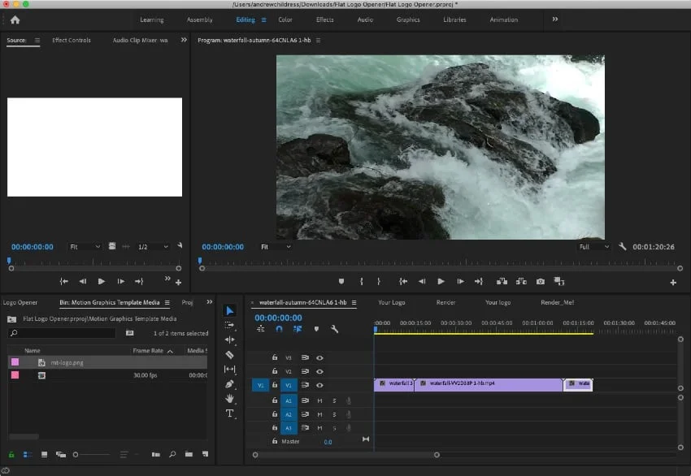

Expérience principale
Expérience professionnelle
Un ensemble de missions menées en communication visuelle, production multimédia et création de supports à destination des publics.
Supports print et numériques
Revue de presse
Montage vidéo
Habillage graphique
